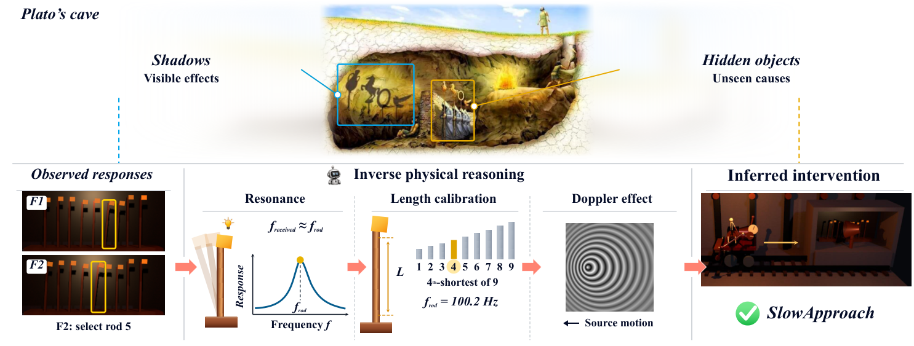
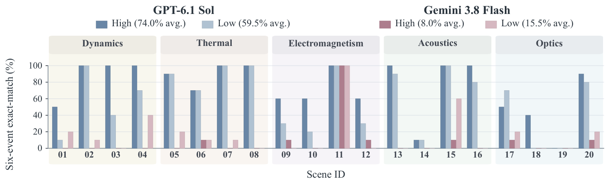

CaveBenchBenchmarking Abductive Physical Reasoning from Internal Observations

Can a vision–language model reconstruct what happened outside an apparatus from the changes it sees inside? CaveBench gives the model an apparatus description and a sequence of internal images. At each event, the model identifies the complete set of controls that produced the observed response.
Dataset
Twenty apparatuses cover dynamics, thermal physics, electromagnetism, acoustics and optics. The 10,200 episodes are split into 9,000 for training, 1,000 for validation and 200 for testing. The test set contains 1,180 questions spanning one to six events.
Dataset viewer
Explore one six-event test episode per apparatus. Compare the seven internal observations with the recorded controls and the model’s submitted answer.
Construction and evaluation
Physical design and example questions


Leaderboard
An answer earns credit when it gives every control at every event in the correct sequence. The order of simultaneous controls within an event does not affect the score.
Detailed tables
Analysis
Physical reasoning across domains and events
GPT-6.1 Sol and Terra recover the complete six-event sequence on 68.0% and 65.0% of test episodes. GPT-6 Luna follows at 28.5%. All 27 model configurations score lower on six-event questions than on single-event questions. Gemini 3.8 Flash drops from 60.5% to 21.5%, and MiniMax M3.1 Flash drops from 38.4% to 12.5%.
Electromagnetism is the strongest domain for MiniMax M3.1 Flash at 27.5%. It is the lowest-scoring domain for both Sol and Terra, at 57.5% and 37.5%, respectively.
Learning to recover a sequence
On Qwen3.5-9B, supervised fine-tuning raises six-event accuracy from 0.5% to 20.0%. Adding SimPO brings it to 31.8%. KTO reaches a similar single-event score to SimPO, yet recovers only 14.5% of complete sequences.

Reasoning effort
With the same ten episodes per scene, increasing effort from low to high raises Sol’s six-event accuracy from 59.5% to 74.0%. Gemini 3.8 Flash moves from 15.5% to 8.0% on the same comparison.

Error analysis
Among 100 selected erroneous responses, 38 failures concern visual identification, 24 physical inference, 31 evidence integration and seven action composition. Each response receives one primary category.